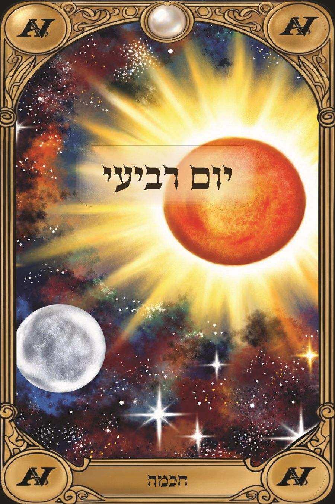

4/72ימי הבריאה
יום רביעי
משמעות הקלף
מייצג בינה, הבנה ותובנות עמוקות על החיים.

מייצג בינה, הבנה ותובנות עמוקות על החיים.
חפיסת באבא בהשראת שלושת הפרקים הראשונים בספר בראשית: קלף, פסוק ופירוש לכל מצב, לעבודה אישית, זוגית או טיפולית.